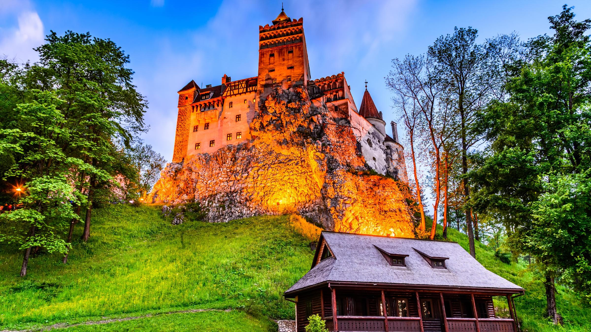
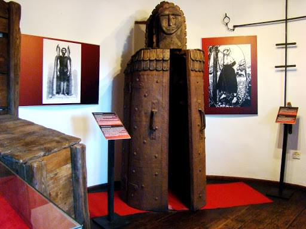
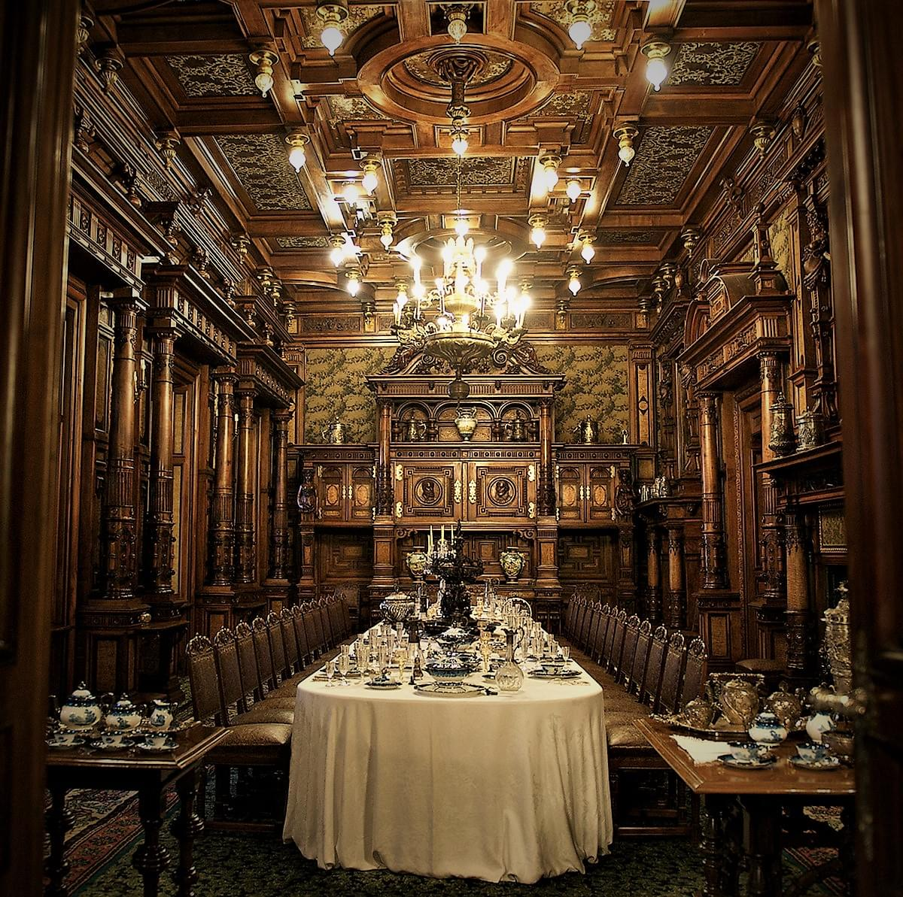
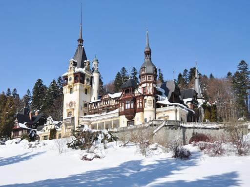

Замок Бран
Интересные места осматривать стоит начать с архитектурного памятника, по легенде считающегося местом пребывания графа Дракулы. Крепость выполнена в готическом стиле, построена она была за средства местных купцов, стремящихся обеспечить защиту собственного товара. Особенностью этой достопримечательности является большая концентрация запутанных троп, просторных залов внутри, коридоров, а также небольших комнат. Все эти помещения пересекаются друг с другом. Обратить внимание стоит на старинный колодец, раньше считалось, что только через него можно попасть в тайное подземелье.
Замок Дракулы на вершине скалы Todor Bozhinov
С другого ракурса
Обстановка замка Бран
Замок Пелеш
Много чего осталось после Гогенцоллернов, которые управляли страной на протяжении 80 лет, имеется в виду не только политическое, но и скульптурное наследие. Самой знаменитой постройкой короля этой династии является замок Пелеш, свое название он получил в честь горной реки. Выполняя его обзор, хотелось бы сказать, что постройка считается жемчужиной города Синай. Круглый год здесь выстраиваются огромные очереди людей, желающих побывать в королевских покоях. После революции, а именно в 1990 году, замок стал общедоступной достопримечательностью Румынии.
Бывшая резиденция румынских монархов – замок Пелеш
Трапезный стол
Зимний вид